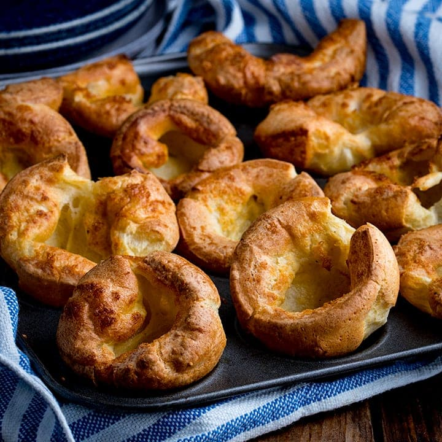

Yorkshire Pudding
A yummy and traditional addition to the holiday feast. If you intend to make this, the timing has to be juuuuust right. I would suggest preparing the mixture the evening before, and having it ready while the roast beef is cooking. Originally submitted to ThanksgivingRecipe.com.

Ingredients
- 1 pound Italian sausage
- 3/4 pound lean ground beef
- 2 cloves garlic, crushed
- 1/2 cup water
- 2 tablespoons white sugar
- 3 eggs, room temperature
- 1/2 cup beef drippings
Directions
- Mix flour and salt together until blended. Make a well in the flour, add the milk, and whisk until consistent. Beat the eggs into the batter. Add water and beat again until the mixture is light and frothy. Set aside for an hour (or, if it's the day before, cover in the fridge overnight).
- If the batter has been refrigerated, allow it to come up to room temperature before using. When the roast beef is ready to come out of the oven, ready the mixture.
-
Preheat oven to 400 degrees F (205 degrees C).
-
Pour off drippings from roast beef and measure out desired amount (about 1/2 cup should do). Pour drippings into a 9x12 inch baking dish and place into the oven until the drippings sizzle. Pour the batter over the drippings and bake for 30 minutes (or until the sides have risen and are golden brown). Cut into eight portions and serve immediately.
Nutrition Facts
Per Serving: 448 calories; protein 29.7g; carbohydrates 36.5g; fat 21.3g; cholesterol 81.8mg; sodium 1400.4mg.
Home